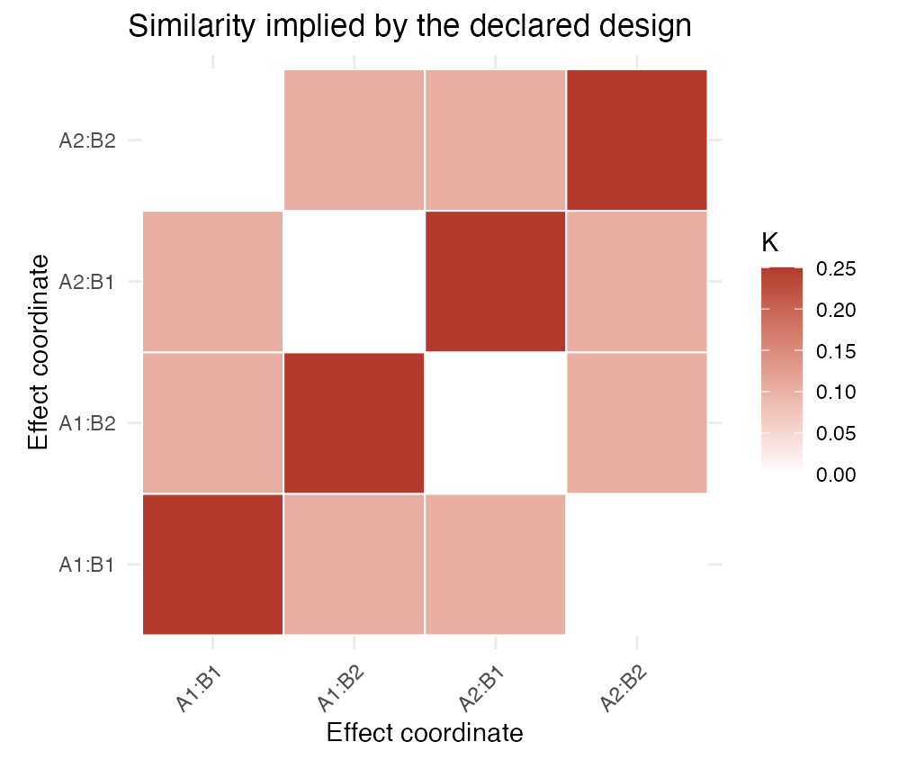
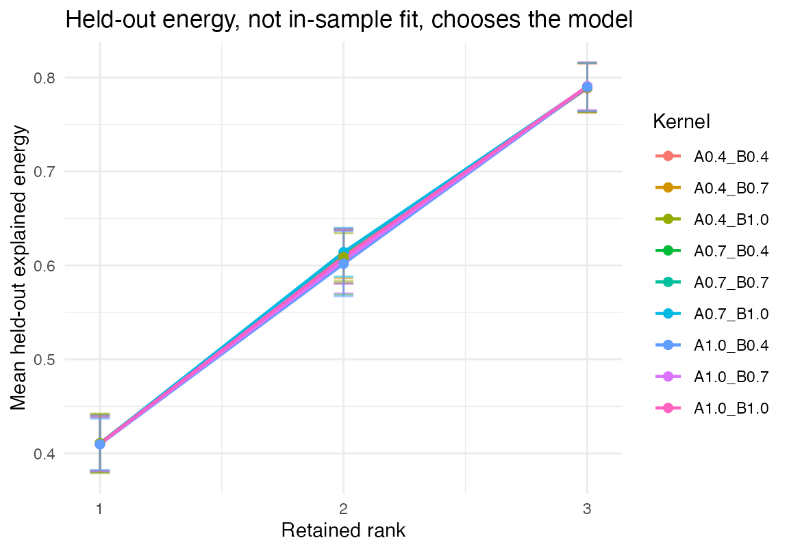

Two analysts can fit the same beta matrices and obtain different latent representations because they encoded different relationships among effects. That choice is the design kernel. It should express a scientific belief you can name—for example, that adjacent ordinal levels are similar—not serve as an opaque tuning matrix.
This page answers four practical questions: what a kernel matrix means, whether it deletes any effect directions, how to compare defensible candidates on held-out subjects, and what ridge regularization can and cannot repair. The working sequence is:
declare kernel -> inspect support rank -> compare kernel x rank in one validation geometry -> refit onceIf you do not yet have aligned q by P_s
beta matrices, read vignette("dkge-workflow") first. The
goal here is model selection within a fixed input contract.
What data will the candidates be judged on?
library(dkge)
S <- 4; q <- 4; P <- 30; T <- 80
betas <- replicate(S, matrix(rnorm(q * P, sd = 0.5), q, P), simplify = FALSE)
true_kernel <- 0.9 * (diag(q) + 0.3)
cholK <- chol(true_kernel)
betas <- lapply(betas, function(B) cholK %*% B + 0.1 * matrix(rnorm(q * P), q, P))
designs <- replicate(S, {
X <- matrix(rnorm(T * q), T, q)
qr.Q(qr(X))
}, simplify = FALSE)
subjects <- lapply(seq_len(S), function(s) dkge_subject(betas[[s]], designs[[s]], id = paste0("sub", s)))
bundle <- dkge_data(subjects)dkge_data() aligns effect order across subjects and
records the common metadata. Every candidate below sees these same beta
and design matrices; only the effect-space geometry changes.
What does a design kernel look like?
factors <- list(
A = list(L = 2, type = "nominal"),
B = list(L = 2, type = "nominal")
)
terms <- list("A", "B", c("A", "B"))
K_struct <- design_kernel(
factors,
terms = terms,
rho = c("A" = 1, "B" = 1, "A:B" = 0.4),
basis = "cell",
normalize = "unit_trace"
)
round(K_struct$K, 2)
#> A1:B1 A1:B2 A2:B1 A2:B2
#> A1:B1 0.25 0.10 0.10 0.00
#> A1:B2 0.10 0.25 0.00 0.10
#> A2:B1 0.10 0.00 0.25 0.10
#> A2:B2 0.00 0.10 0.10 0.25Rows and columns are effect-coded coordinates. Bright off-diagonal cells mean that two coordinates are treated as similar by the declared factor terms; near-zero cells leave them largely uncoupled.

Each term contributes one similarity component. rho
controls its relative strength: here the two main effects receive weight
1 and their interaction receives weight 0.4. Those numbers encode a
preference, not an empirical finding. design_kernel() also
retains the factor and term metadata needed by target and
cross-validation helpers.
Which rank and kernel predict held-out structure?
dkge_cv_kernel_rank() first screens named kernels by
alignment, then evaluates the retained kernel-rank pairs with
leave-one-subject-out explained energy. A candidate kernel shapes the
training basis, but it does not choose the metric used
to grade itself: every candidate is scored in ordinary effect space
after the common pooled-design scaling. Supply one fixed
validation_K only when a different validation geometry was
specified before looking at the scores.
rho_vals <- seq(0.4, 1.0, by = 0.3)
K_grid <- list()
for (ra in rho_vals) {
for (rb in rho_vals) {
nm <- sprintf("A%.1f_B%.1f", ra, rb)
K_grid[[nm]] <- design_kernel(
factors,
terms = terms,
rho = c("A" = ra, "B" = rb, "A:B" = 0.4),
basis = "cell",
normalize = "unit_trace"
)$K
}
}
selection <- dkge_cv_kernel_rank(
bundle$betas, bundle$designs,
K_grid = K_grid,
ranks = 1:3,
top_k = length(K_grid)
)
selection$validation
#> $kind
#> [1] "effect_space_identity"
#>
#> $rank
#> [1] 4
#>
#> $nullity
#> [1] 0
#>
#> $condition
#> [1] 1
#>
#> $effective_rank_pr
#> [1] 4
#>
#> $effective_rank_fraction
#> [1] 1
#>
#> $leading_eigenvalue_share
#> [1] 0.25
#>
#> $tolerance
#> [1] 1e-10
#>
#> $relative_tolerance
#> [1] 1e-10
#>
#> $full_rank
#> [1] TRUE
#>
#> $near_singular
#> [1] FALSE
#>
#> $status
#> [1] "well_conditioned"
selection$picks_per_kernel
#> kernel rank score se kernel_rank kernel_nullity kernel_condition
#> 1 A0.4_B0.4 3 0.789 0.0262 4 0 5.0
#> 2 A0.7_B0.7 3 0.790 0.0257 4 0 8.0
#> 3 A0.4_B0.7 3 0.789 0.0260 4 0 6.5
#> 4 A0.7_B0.4 3 0.790 0.0258 4 0 6.5
#> 5 A0.7_B1.0 3 0.790 0.0256 4 0 9.5
#> 6 A1.0_B1.0 3 0.791 0.0255 4 0 11.0
#> 7 A1.0_B0.7 3 0.790 0.0255 4 0 9.5
#> 8 A0.4_B1.0 3 0.790 0.0259 4 0 8.0
#> 9 A1.0_B0.4 3 0.790 0.0257 4 0 8.0
#> kernel_effective_rank_pr kernel_effective_rank_fraction
#> 1 3.27 0.818
#> 2 3.07 0.768
#> 3 3.10 0.776
#> 4 3.10 0.776
#> 5 2.99 0.747
#> 6 2.97 0.742
#> 7 2.99 0.747
#> 8 2.95 0.736
#> 9 2.95 0.736
#> kernel_leading_eigenvalue_share kernel_effective_rank_to_rank
#> 1 0.417 1.091
#> 2 0.444 1.024
#> 3 0.433 1.034
#> 4 0.433 1.034
#> 5 0.452 0.997
#> 6 0.458 0.990
#> 7 0.452 0.997
#> 8 0.444 0.982
#> 9 0.444 0.982The score is the fraction of a held-out subject’s energy in that fixed validation geometry captured by the training-fold basis. It is descriptive predictive evidence, not a significance test. Because the denominator is common across candidates, a low-rank kernel cannot obtain a near-perfect score merely by deleting the directions it fails to predict. The selector applies its documented one-standard-error rule, preferring a lower rank among eligible pairs rather than blindly taking the largest observed mean.
The full rank curves reveal more than the final pick:

Look for a curve that is both high and reasonably stable across folds. A tiny advantage at a larger rank may not justify the added complexity; that is why the selector applies the one-standard-error rule.
best <- selection$pick
best
#> $kernel
#> [1] "A1.0_B1.0"
#>
#> $rank
#> [1] 3
K_best <- K_grid[[best$kernel]]
fit <- dkge(bundle, K = K_best, rank = best$rank)
round(fit$sdev, 3)
#> [1] 9.83 5.36 4.94
dkge_diagnostics(fit)$kernel
#> $rank
#> [1] 4
#>
#> $nullity
#> [1] 0
#>
#> $condition
#> [1] 11
#>
#> $effective_rank_pr
#> [1] 2.97
#>
#> $effective_rank_fraction
#> [1] 0.742
#>
#> $leading_eigenvalue_share
#> [1] 0.458
#>
#> $tolerance
#> [1] 4.58e-11
#>
#> $relative_tolerance
#> [1] 1e-10
#>
#> $full_rank
#> [1] TRUE
#>
#> $near_singular
#> [1] FALSE
#>
#> $status
#> [1] "well_conditioned"Support rank is part of the scientific model
A positive-semidefinite kernel may be singular on purpose. Then DKGE
works in the quotient space image(K): directions in
null(K) have been declared indistinguishable or irrelevant.
That is a substantive restriction, not a numerical nuisance.
kernel_roots() reports the numerical rank, nullity, and
condition number without silently filling null directions. It also
reports the participation-ratio effective rank and leading-eigenvalue
share. Those latter quantities describe spectral concentration; they do
not redefine numerical support.
Here a candidate makes the first two effects identical. Its rank is three, not four, so a four-component fit does not exist:
K_collapsed <- diag(q)
K_collapsed[1:2, 1:2] <- 1
collapsed_geometry <- kernel_roots(K_collapsed)
unlist(collapsed_geometry[c("rank", "nullity", "condition", "status")])
#> rank nullity condition status
#> "3" "1" "2" "singular"
rank_guard <- suppressWarnings(dkge_cv_kernel_grid(
bundle$betas, bundle$designs,
K_grid = list(identity = diag(q), collapsed = K_collapsed),
rank = q - 1L
))
rank_guard$table[, c(
"kernel", "kernel_rank", "kernel_nullity", "rank_requested",
"admissible", "reason"
)]
#> kernel kernel_rank kernel_nullity rank_requested admissible
#> 1 identity 4 0 3 TRUE
#> 2 collapsed 3 1 3 FALSE
#> reason
#> 1 <NA>
#> 2 kernel rank 3 is below q = 4 under the full-rank policyThe candidate remains usable at rank three or below if that quotient
geometry is scientifically intended and selection explicitly sets
kernel_rank_policy = "allow_singular". The default
full-rank policy retains it in the audit table but excludes it from
selection. A direct dkge_fit() still allows intentional PSD
quotient geometry: it caps the rank, emits a kernel-rank warning, and
records the decision in dkge_diagnostics(fit)$kernel and
fit$rank_reduced.
Full rank can still be effectively low-dimensional
An algebraically full-rank kernel can put almost all of its mass on a few directions. The participation ratio
is scale invariant and ranges from one to the numerical support rank. Here all four directions exist, but one dominates:
K_concentrated <- diag(c(1, rep(0.01, q - 1)))
concentrated_geometry <- kernel_roots(K_concentrated)
unlist(concentrated_geometry[c(
"rank", "condition", "effective_rank_pr",
"effective_rank_fraction", "leading_eigenvalue_share"
)])
#> rank condition effective_rank_pr
#> 4.000 100.000 1.061
#> effective_rank_fraction leading_eigenvalue_share
#> 0.265 0.971This is not a failed PSD or rank check. Predictive CV may rationally
prefer such a kernel when the dominant direction is the most
reproducible signal. But that objective does not promise that planned
effect contrasts remain distinguishable. The CV helpers therefore retain
the predictive selection while adding these spectral fields to their
audit tables. They warn when the selected kernel’s participation-ratio
effective rank divided by the selected latent rank is below
kernel_concentration_threshold (default 0.75;
use NULL to disable the warning). The warning is
diagnostic, not a separability penalty.
What does ridge regularization do here?
For a full-rank kernel, ridge adds the usual isotropic
term to the fitted q-space moment before eigendecomposition. For a
singular kernel, it is isotropic only within
image(K); it never manufactures dimensions in
null(K). Thus ridge can stabilize a noisy moment, but it
cannot raise kernel rank, distinguish effects the kernel merged, or
selectively repair a questionable scientific geometry. Encode
effect-specific structure in the kernel or input weights instead.
What to check before choosing a kernel
Use design_kernel() to encode effect relationships you
can defend. If the structure is uncertain, include diag(q)
as a baseline rather than assuming a structured kernel must win. Compare
kernels and ranks with dkge_cv_kernel_rank(), verify that
all candidates were scored in the same validation geometry,
and inspect kernel_rank, kernel_nullity,
kernel_condition, kernel_effective_rank_pr,
kernel_leading_eigenvalue_share, and
admissible in the returned tables. Treat an all-near-1
saturation warning as evidence that the criterion cannot discriminate
the candidates, and a concentration warning as evidence that good
prediction may coexist with weak contrast separability. Refit the
selected configuration before running inference, preflight the planned
contrasts with dkge_contrast_diagnostics(), and treat ridge
as within-support numerical regularization rather than an
effect-selection device.
Where to go next
-
vignette("dkge-workflow")puts the selected kernel into the full fit-to-map sequence. -
vignette("dkge-contrasts-inference")evaluates a prespecified contrast once the kernel is settled. -
vignette("dkge-partial-effect-spaces")covers the case where subjects do not all observe the same effects.